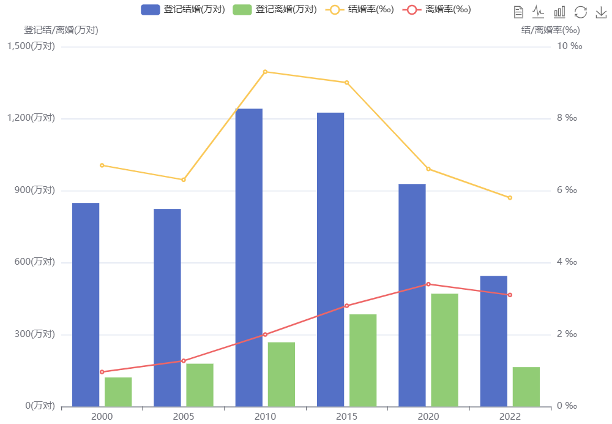
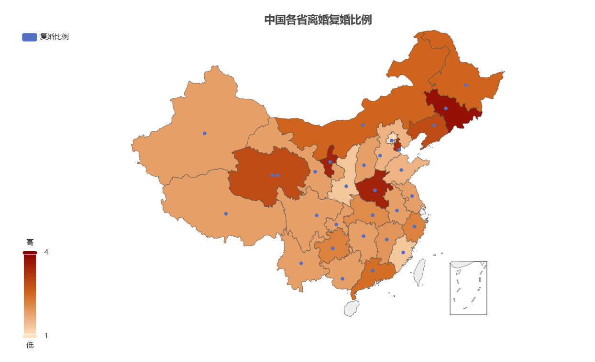
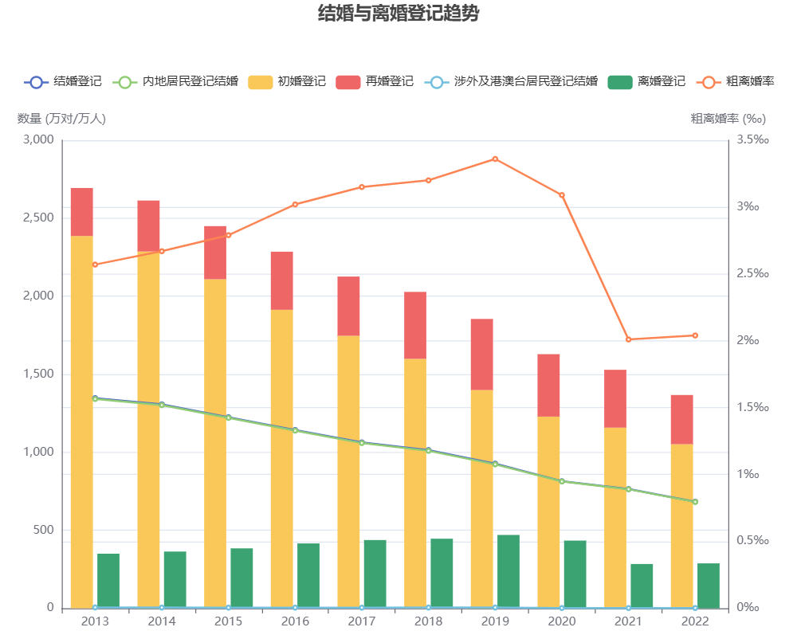

时间溯源
追溯到2021年1月1日，我国宣布实施离婚冷静期，是对婚姻问题的进一步探索。离婚冷静期的出现，本意是给冲动离婚的夫妻一个“慢动作回放的机会”，让他们重新审视婚姻，避免一时冲动造成不可挽回的后果。
故事引入
”当婚姻中的问题变得难以承受时，
我意识到我们之间的裂痕已经无法修补，
经过长时间的挣扎和反思，
我做出了一个艰难的决定——离婚。
然而，婚姻登记处告诉我：
接下来，你们将进入一个为期30天的离婚冷静期...”
离婚冷静期设置的必要性
设置离婚冷静期，是民法典的一项重要规定，是根据我国婚姻家庭领域出现的新形势心情款那个作出的一项重大制度安排，其目的是减少离婚或者草率离婚。 数据统计显示，近20年间，我国的离婚率在不断攀升，而结婚率却不断降低，各省的复婚率也居高不下。

众所周知，婚姻的未定影响着社会的和谐与发展，于是，离婚冷静期应运而生。
网友的看法火药味十足
设置离婚冷静期，是民法典的一项重要规定，是根据我国婚姻家庭领域出现的新形势心情款那个作出的一项重大制度安排，其目的是减少 离婚或者草率离婚。 数据统计显示，近20年间，我国的离婚率在不断攀升，而结婚率却不断降低，各省的复婚率也居高不下。 众所周知，婚姻的未定影响着社会的和谐与发展，于是，离婚冷静期应运而生。
关于这一社会现象，我们收集了更多的数据，进行了深入的探讨。离婚冷静期到底是婚姻的缓冲带还是枷锁？离婚冷静期不应成为逃避婚姻问题的借口!
离婚冷静期实施的正面效果
离婚冷静期从社会的稳定和整体的利益出发，兼顾保障个人权利和自由。 离婚冷静期出台后，在国内引起了强烈的反响，自2021年1月1日开始实施离婚冷静期规定，时间为30天，21年离婚对数减少了20万，效果可谓立竿见影。
